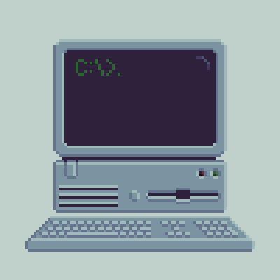

Give me recipe ideas for a celebration meal.
K8:
Use natural language and express thoughts in full sentences
Be specific and iterate, providing as much context as possible
Be concise and clear, keeping the conversation going by fine-tuning prompts and using follow-up prompts to get better responses